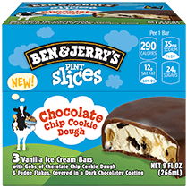
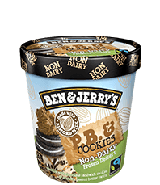
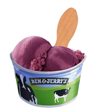
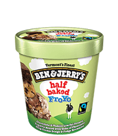
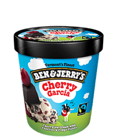

Ansayfa
Tatlar
Dükkan
Hakkımızda
Bizi Bul
Ben & Jerry'nin tadını çıkarmanın pek çok yolu var. Üslerimizi iyi bir eski çikolata ve ödüllü
vanilya ile kaplıyoruz, ancak oradaki bütün kâseleri tatmin etmek için 60'tan fazla lezzetle
daha da ileri gidiyoruz.
Ice Cream Prints

Pint Slices

Nan-Dairy Pints

Scoop Shop Flavaors

Frozen Yogurt Pints
Mini Cups

Quarts